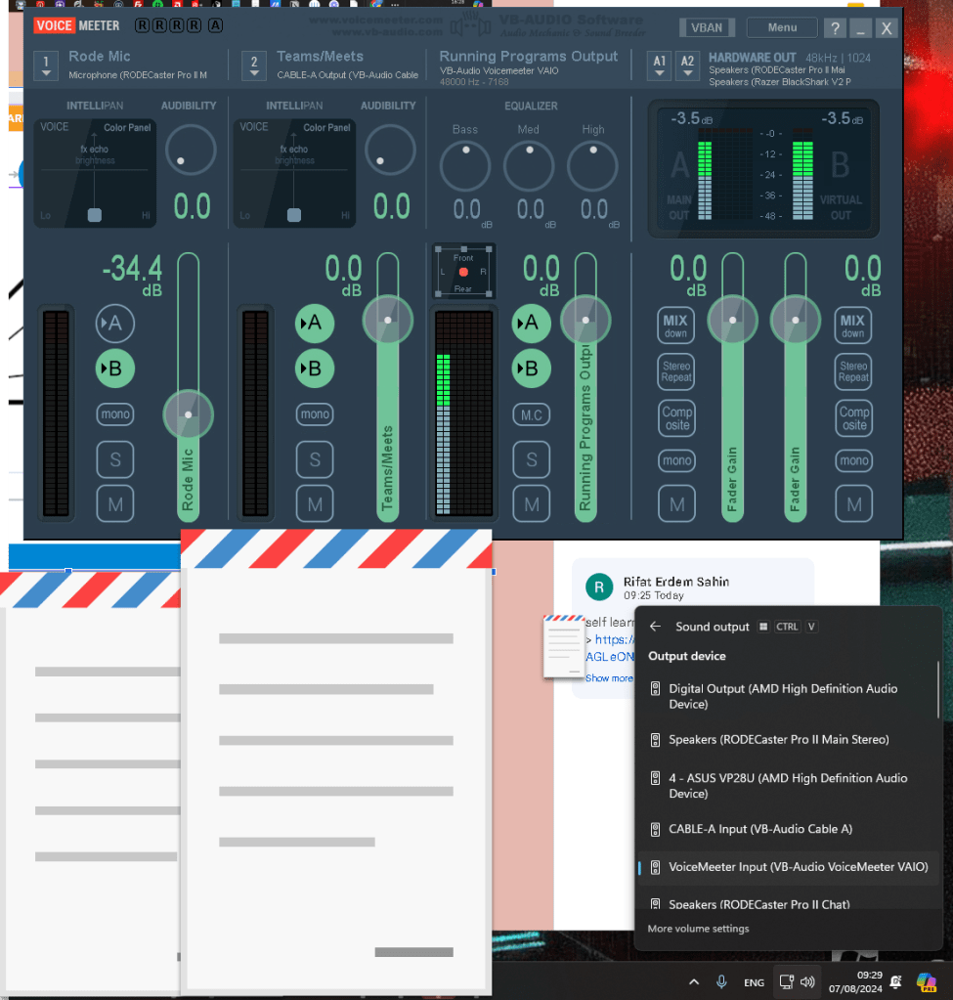

Setting Up and Routing Audio with Voicemeeter on Your Computer

Voicemeeter is a versatile virtual audio mixer that allows you to manage and route audio from different applications on your computer. Whether you're a podcaster, streamer, or just looking to enhance your audio setup, Voicemeeter offers a range of features to help you achieve professional-quality sound. In this blog post, we'll walk you through the process of setting up Voicemeeter and configuring it to route your audio effectively.
What You'll Need
-
A computer running Windows
-
Voicemeeter software (Voicemeeter Standard, Voicemeeter Banana, or Voicemeeter Potato)
-
Audio devices (microphone, headphones, speakers, etc.)
Step 1: Download and Install Voicemeeter
-
Download Voicemeeter:
Visit the Voicemeeter website and choose the version that suits your needs. Voicemeeter Banana is the most commonly used version as it offers a good balance of features. -
Install Voicemeeter:
Run the installer and follow the on-screen instructions. After installation, restart your computer to ensure that all changes take effect.
Step 2: Configure Your Audio Hardware
-
Set Up Input and Output Devices:
-
Open Voicemeeter. You'll see multiple strips labeled Hardware Input and Virtual Input.
-
Click on the first Hardware Input strip and select your primary microphone or audio input device.
-
For the output, click on the A1 Hardware Out strip and select your primary playback device (e.g., headphones or speakers).
-
Additional Inputs and Outputs:
-
If you have more input devices (e.g., a second microphone), select them on the subsequent Hardware Input strips.
-
Similarly, you can configure additional output devices on the A2 and A3 strips if needed.
Step 3: Routing Audio in Voicemeeter
-
Understanding Strips and Buses:
-
Each input strip can be routed to one or more output buses (A1, A2, A3, B1, B2).
-
Hardware Outputs (A1, A2, A3) are physical output devices.
-
Virtual Outputs (B1, B2) are used to send audio to virtual devices or software applications.
-
Routing Audio:
-
For each input strip, you'll see buttons labeled A1, A2, A3, B1, and B2. These buttons determine where the audio from each input is sent.
-
For example, if you want your microphone audio to go to your headphones (A1) and to a recording software (B1), you would enable both A1 and B1 buttons on the microphone input strip.
Step 4: Configuring Windows Audio Settings
-
Set Default Playback Device:
-
Go to the Windows sound settings (right-click the speaker icon in the system tray and select Sound settings).
-
Set Voicemeeter Input (VB-Audio Voicemeeter VAIO) as the default playback device. This routes all system audio through Voicemeeter.
-
Set Default Recording Device:
-
In the sound settings, set Voicemeeter Output (VB-Audio Voicemeeter VAIO) as the default recording device. This routes audio from Voicemeeter to applications that record audio.
Step 5: Fine-Tuning Your Setup
-
Adjusting Levels:
-
Use the sliders on each strip to adjust the input and output levels. Ensure that the audio levels are not peaking (indicated by red on the level meters).
-
Applying Effects:
-
Voicemeeter offers various effects such as EQ, compression, and reverb. Explore these options to enhance the audio quality as needed.
-
Saving Your Configuration:
-
Once you have configured everything to your liking, save your setup by going to Menu > Save Settings in Voicemeeter. This ensures that your settings are preserved for future sessions.
Conclusion
Voicemeeter is a powerful tool that can greatly enhance your audio management capabilities. By following these steps, you can set up Voicemeeter to route audio from multiple sources to various destinations, giving you precise control over your audio environment. Experiment with different configurations to find the setup that works best for you, and enjoy the improved audio experience!
Feel free to reach out with any questions or share your experiences with Voicemeeter in the comments below. Happy mixing!
Imported from rifaterdemsahin.com · 2025